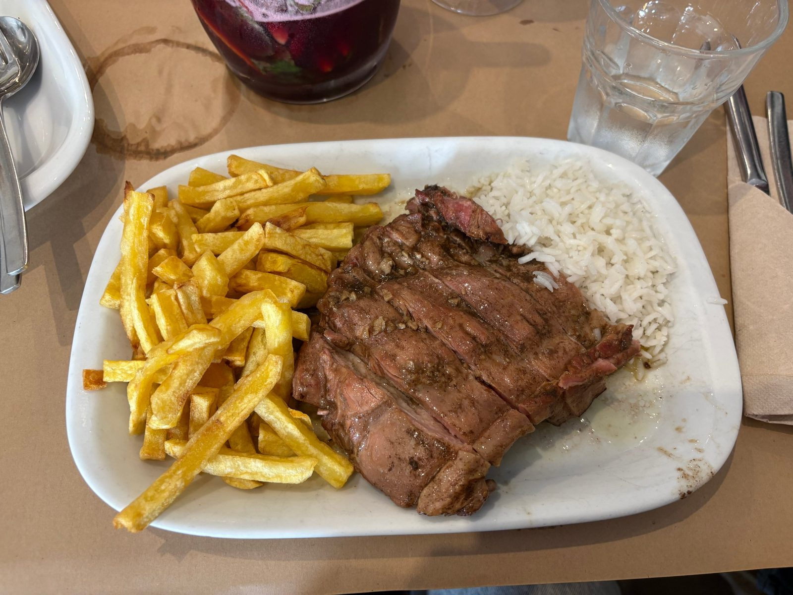
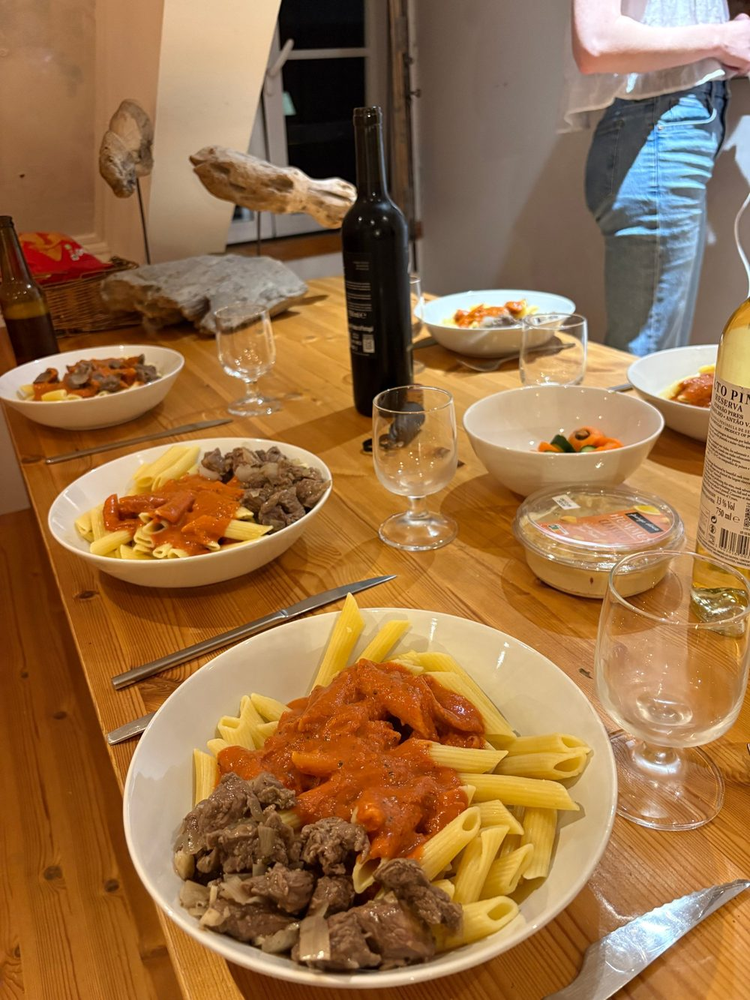
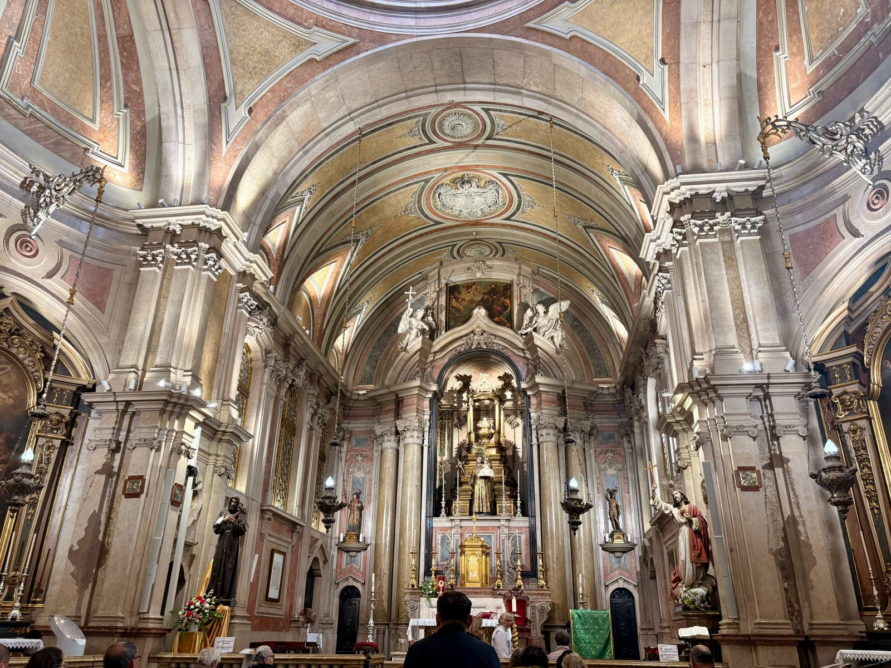

- Day bus pass (about)€7.50
- Pastel de nata€1.90
- Home-cooked dinnerAbout €8 each
- Airport to centre45 min to 1 hour
Lisbon is an easy city to do on a budget: a day pass for the buses is about €7.50, a pastel de nata is €1.90, and a home-cooked dinner from the grocery store came to about €8 each for our group of six. We flew in from Dublin for the weekend, and this is how the Lisbon half of the trip went. (The other half was a day trip to Fátima, which has its own post: Fátima Day Trip from Lisbon.)
1. Getting from the airport to the city About €7.50
We took the bus into the city, which takes anywhere from 45 minutes to an hour depending on traffic. You need a bus card, and I'd recommend getting a day pass for about €7.50. It covers your rides around the city, so you don't have to count every trip.
Tip: Fares and card options change, so check the current prices at the ticket machine or the transport desk when you land.
2. Lunch at Delícia de Arroios About €14
Our first stop was lunch at Delícia de Arroios, a small local restaurant in the Arroios neighbourhood. We tried a lot of traditional Portuguese food: Portuguese-style pork, soup, fish, fish pancakes, and rice and beans. Most meals were about €14, and there were cheaper options on the menu too.
We also split a pitcher of sangria for €18. With six of us sharing, that's just €3 each.

Tip: If you're travelling in a group, pitchers are almost always a better deal than ordering drinks one by one.
3. Drop your bags, then wander
After lunch we dropped our bags at our Airbnb, then spent the afternoon walking around the city. We popped into shops and churches, stopped for pastries, and just enjoyed being somewhere new. Wandering is free, and Lisbon is a great city for it.
4. Pastéis de Belém €1.90
You can't go to Lisbon without trying a pastel de nata, the famous Portuguese custard tart. We got ours at Pastéis de Belém for €1.90 each, and we liked them so much we went back on Sunday morning for more. The price was about the same everywhere in Lisbon, so you don't have to hunt for the cheapest spot.
5. Cook dinner instead of eating out About €8 each
For dinner we went to Pingo Doce, a grocery store, and cooked in our Airbnb. We made penne alla vodka with steak and bread, and it came to about €8 each. Steak is much cheaper in Portugal than in the US, so it felt like a luxury meal for the price of a fast-food combo.

Tip: Booking a place with a kitchen is one of the easiest ways to keep a weekend trip cheap. After a long day of walking, we were happy to eat at home and go to bed early.
6. Sunday morning: Mass at the Church of Saint Anthony
On Sunday we started with another pastel de nata, then went to Mass at the Church of Saint Anthony. It's built on the site where St. Anthony was born, and after Mass we visited the crypt. It's a quiet, beautiful stop even if you're not religious.

Tip: Our flight back to Dublin was later that day, so leave extra time to get to the airport and go through customs.
What we spent
Final Thoughts
Lisbon is a great weekend city on a student budget. The transport is easy, the pastries are €1.90, and cooking one meal at home saves a lot. If you have a free day, don't miss the day trip to Fátima, which I wrote about in my next post.
Have you been to Lisbon? Where did you get your pastel de nata? Let me know in the comments!